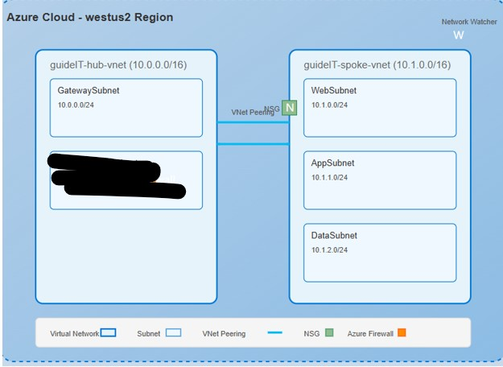

Project Overview
This project demonstrates the implementation of a hub-spoke network topology in Azure, showcasing fundamental network engineering principles, segmentation, and security best practices while maintaining cost efficiency. The design creates a foundation for enterprise-grade network architecture that can be expanded for production workloads.
Architecture Diagram

Visual representation of the hub-spoke network architecture with security components and network segmentation
Technical Implementation
Core Infrastructure
- Resource Group: guideIT-rg (West US 2)
- Hub Virtual Network: guideIT-hub-vnet (10.0.0.0/16)
- GatewaySubnet (10.0.0.0/24)
- AzureFirewallSubnet (10.0.1.0/24)
- Spoke Virtual Network: guideIT-spoke-vnet (10.1.0.0/16)
- WebSubnet (10.1.0.0/24)
- AppSubnet (10.1.1.0/24)
- DataSubnet (10.1.2.0/24)
Network Security
- Web Tier NSG: guideIT-web-nsg
- Allows HTTP (port 80) inbound
- Allows HTTPS (port 443) inbound
- App Tier NSG: guideIT-app-nsg
- Allows traffic from Web Tier only
- Restricts direct internet access
Connectivity
- VNet Peering: Bi-directional connectivity
- HubToSpoke peering configuration
- SpokeToHub peering configuration
- Virtual Machine: guideIT-web-vm
- Located in WebSubnet
- Demonstrates network connectivity
Implementation Process
The infrastructure was deployed using a combination of Azure CLI commands and Azure Portal configuration, demonstrating proficiency in both programmatic and GUI-based network configuration.
Key Commands Used
# Create resource group
az group create --name guideIT-rg --location westus2
# Create hub VNet
az network vnet create --resource-group guideIT-rg --name guideIT-hub-vnet --address-prefix 10.0.0.0/16
# Create spoke VNet
az network vnet create --resource-group guideIT-rg --name guideIT-spoke-vnet --address-prefix 10.1.0.0/16
# Create subnets
az network vnet subnet create --resource-group guideIT-rg --vnet-name guideIT-hub-vnet --name GatewaySubnet --address-prefix 10.0.0.0/24
az network vnet subnet create --resource-group guideIT-rg --vnet-name guideIT-hub-vnet --name AzureFirewallSubnet --address-prefix 10.0.1.0/24
# Create peering
az network vnet peering create --resource-group guideIT-rg --name HubToSpoke --vnet-name guideIT-hub-vnet --remote-vnet guideIT-spoke-vnet --allow-vnet-access
Network Engineering Principles Demonstrated
1. Network Segmentation
- Separation of network tiers (web, app, data)
- Subnet isolation for different workload types
- Clear address space planning with CIDR notation
2. Security Controls
- NSGs implemented at subnet level
- Rule-based traffic filtering
- Defense-in-depth security approach
3. Hub-Spoke Design Pattern
- Centralized management of shared services
- Simplified network topology
- Efficient connectivity between segments
4. Cost Optimization
- Right-sized implementation
- Strategic use of Azure networking features
- Proper resource allocation
Future Enhancements
If this demonstration were expanded to a production environment, the following enhancements would be implemented:
- Azure Firewall for centralized network security
- Azure Bastion for secure VM access
- ExpressRoute or VPN Gateway for hybrid connectivity
- Azure Private Link for secure PaaS service access
- Network Watcher for advanced diagnostics
- Traffic Analytics for network visibility
Key Learnings & Skills Demonstrated
Technical Skills
- Azure Virtual Network design and implementation
- Network Security Group configuration
- VNet Peering setup and management
- CLI and Portal-based Azure administration
Network Engineering Concepts
- Network architecture planning
- IP address space management
- Security as a fundamental network element
- Centralized vs. distributed network management
← Back to Portfolio